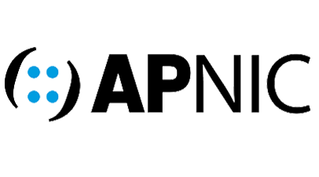

I am experienced and Certified IT Technician with a background in
support and operations. Skilled in Microsoft/Azure and hybrid
administration. Adept at resolving issues through telephone, email, and
remote access tools. Collaborative and flexible team leader with
excellent communication skills. Proficient in troubleshooting,
problem-solving, and delivering high-quality service to end-users.

Experience
IT Technician (Support/Operations) | IXX | Dec 2022 - Jun 2023
Vendor communication.
Managing Vast variety of daily operations (VM backups, Co-location,
High priority tickets from 1st line).
Azure Governance and Advance Threat Hunting.
False spam detection hunting.
Conditional Access template editing for clients environment.
Vsphere VMs management (disk sizing, ram management for high
priority changes).
Creation and management of certificates.
SIP/VOIP/RTP call management and routing for end-users.
Enrolling and troubleshooting of 200+ printers and 150+ Payment
terminal across entire Sweden
Fortinet/Cisco/Unifi firewall and AP patching and management